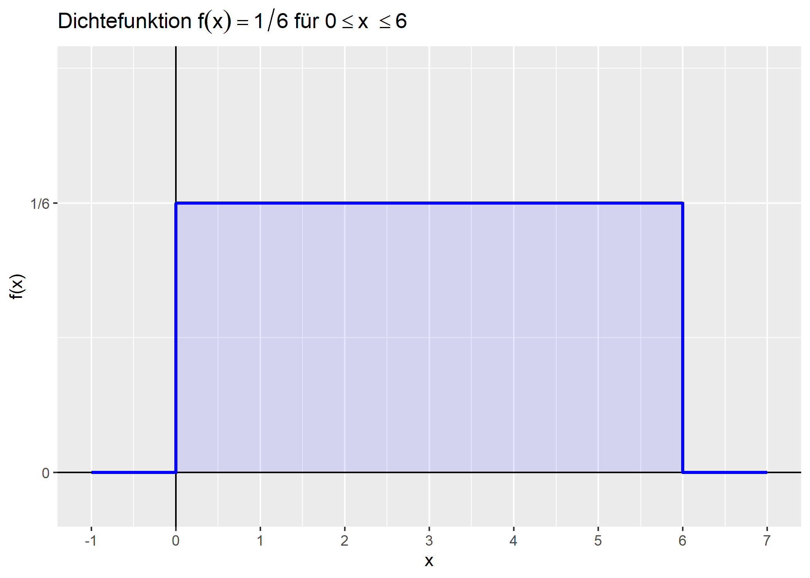

R-Code anzeigen
noten <- c(1.3, 2.0, 1.7, 3.3, 2.3)
mean(noten)[1] 2.12Anna
Hi, I’m a developer based in Munich. I’m interested in Psychology.
15.04.2026
Chaos in Notizenform
taks/todo: Eid 5.3.4
NOIRA-Regel
Nominalskala
Ordinalskala
Intervallskala
Ratio-/Verhältnisskala
Absolutskala
Eine Relation R \(\circ\) heißt Äquivalenzrelation, wenn sie folgende drei Anforderungen erfüllt:
Merkmals-xx
Arithmetisches Mittel
arithm. Mittel = \(\sum \frac{Alle\, Werte}{Anzahl\, Werte}\)
in R: mean
Median
mittlerer Wert; 50% der Werte sind größer und 50% der Werte sind kleiner
in R: median
Modalwert
der am häufigsten vorkommende Wert
Geometrisches Mittel
n-te Wurzel aus dem Produkt der n Werte
stets kleiner als da arithmetische Mittel
geom. Mittel = \(\sqrt[n]{\prod_{i_1}^{n}x_i}\)
[1] 4Quartil
teilt Datenreihe in vier gleich große Bereiche
25% der Daten liegen unter Q1 - unteres Quartil
Q2 - zweites Quantil entspricht dem Median
75% der Daten liegen unter Q3 - oberes Quartil
in R: quantile
0% 25% 50% 75% 100%
3 15 30 55 100 Interquartilsabstand (=Q3-Q1) Abstand der mittleren 50% der Daten in R: IQR
einfacher: in R: summary
Min. 1st Qu. Median Mean 3rd Qu. Max.
3.00 15.00 30.00 39.09 55.00 100.00 Quantil Verallgemeinerung Quartil
p-Quartil: links sind p der Werte, rechts 1-p
Q3 entspricht damit p = 75%
in R: quantile(x, probs)
30% 60% 90%
18 45 80 Vektor
Menge von Objekten in R, durch Pfeil definiert, mit Funktion c=combine zusammengefügt
Zufallszahlen Für Vektoren bestehend aus Zufallszahlen kann die Funktion rnorm(Anzahl Zahlen, arith. Mittel, Standardabweichung) verwendet werden, die Zahlen aus der Normalverteilung angibt
Min. 1st Qu. Median Mean 3rd Qu. Max.
-46.886 -16.959 -5.509 -3.583 9.820 25.824 [1] 9.179173 -4.400853 -33.560784 -6.617933 8.129160 -6.886447
[7] 24.573263 25.824357 7.824911 -24.652288 19.851547 -46.885889
[13] 5.267410 -14.623375 25.078119 -8.110058 -23.964945 -10.595014
[19] 11.741128 -28.830585Histogramm
graphische Darstellung der Häufigkeitsverteilung
Boxplot Dartellung der Verteilung
Darstellung der Medians, der Quartile Q1 und Q3, Whiskern und Ausreißern
Whisker sind der letzte Wert, der sich max. das 1,5-fache des IQR von Q1 bzw. Q3 befindet
Ausreißer weiter entfernt, durch Kreis gekennzeichnet
Zufallsvariablen
diskret: nur einzele abgegrenzte Werte möglich, zB 1,2,..,6 für die Augen auf einen Würfel
stetig: unendlich viele Zwischenwerte
bei diskreten Variablen -> Wahrscheinlichkeitsfunktion
bei stetigen Variablen -> Dichtefunktion, Höhe des Graphen gibt Wahrscheinlichkeitsdichte an
Wahrscheinlichkeit für einzelnen exakten Punkt bei stetigen Variable gleich Null, sinnvolle Aussagen nur über Intervalle, Wahrscheinlichkeit entspricht Fläche unter Graphen (Berechnung durch Integral)
gesamte Fläche Dichtefunktion == 1 = 100%
Bsp.

\[ f(x) = \begin{cases} 0 & \text{für } x < 0 \\ \frac{1}{6} & \text{für } 0 \leq x \leq 6 \\ 0 & \text{für } x > 6 \end{cases} \]
\[P(A) = \frac{\text{Anzahl der günstigen Fälle}}{\text{Anzahl der möglichen Fälle}}\]
Wahrscheinlichkeit für beide Ergebnisse zusammen immer kleiner/gleich Wahrscheinlichkeit eines Einzerergebnises
\[P(A|B) = \frac{P(A \wedge B)}{P(B)}\] Wahrscheinlichkeit für A, wenn bereits B gilt: Wahrscheinlichkeit für A und B geteilt durch Wahrscheinlichkeit von B
Beispiel
Schnittmenge gleich, Wahrscheinlichkeit total unterschiedlich, weil Basis unterschiedlich
beeinflussen sich nicht, daher gilt hier Produktregel
\[P(A \wedge B) = P(A) \cdot P(B)\]
Bernoulli-Experimente: es gibt jeweils nur zwei mögliche Ergebnisse, zb wahr/falsch, Kopf/Zahl, gesund/krank
Wahrscheinlichkeit für Erfolg = p
\[P(A_{k}) = \binom{n}{k} p^{k} (1-p)^{n-k}\]
Beispiel:
30% depressiv, Stichprobenanzahl 20, Wahrscheinlichkeit für 5 Erkrankte? \[\binom{20}{5} \cdot 0,3^5 \cdot 0,7^{15} \approx \mathbf{0,179}\]
Stichprobengröße n, Erfolgswahrscheinlichkeit p
-> Erwartungswert \(E = n \cdot p\)
Im Beispiel \(E = 20 \cdot 0,3 = 6\)
Erwartungswert entspricht Populationsmittelwert \(\mu\).
Standardabweichung Stichprobenverteilung Binominalverteilung
Standardfehler für Anteil \[\sigma_{Anteil} = \sqrt{\frac{p(1-p)}{n}}\]
Standardfehler für Mittelwert \[\hat{\sigma}_{\bar{x}} = \frac{\hat{\sigma}}{\sqrt{n}}\] \(\hat{\sigma}\) ist der Standardfehler der Population, \(\hat{\sigma}_x\) der Stichprobe
Schätzung Populationsvarianz \[\hat{\sigma}^2 = \frac{1}{n-1} \sum_{i=1}^{n} (x_i - \bar{x})^2\]
\(n-1\) anstelle von \(n\), da echte Varianz in kleiner Stichprobe sonst unterschätzt
wenn \(n\cdot p(1-9) > 9\) Formel für Normalverteilung statt Binominalverteiung nutzbar
Gleichverteilung/Rechteckverteilung: gleiche Breiter der Intervalle = gleiche Wahrscheinlichkeit
Normalverteilung: Gauß’sche Glockenkurve
z-Standardnormalverteilung: Mittelwert = 0, Standardabweichung = 1
Normalverteilung